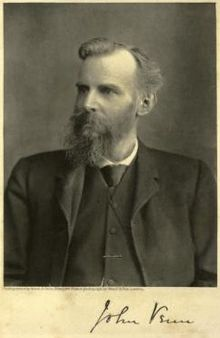

Saturday, March the 26th, 2011
back to: title, date or indexes
I have been thinking of drawing a Venn diagram showing all possible Venns. There is John Venn himself, the invenntor of the diagram, also notable for having built an automatic cricket-ball-bowling machine which was used to great effect in Cambridge in 1909 against a visiting Australian XI. There is red ochre-stained Diggory Venn, the reddleman from Hardy's The Return Of The Native (1878). And there is a hamlet in Saskatchewan called Venn which, in its glory days, had a wood crib grain elevator.
There, that is three Venns to be going on with, sufficient for a diagram. Time to get the coloured pencils and paper!
